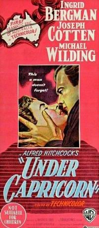

Under Capricorn
Studio: Transatlantic Pictures
Starring: Michael Wilding, Ingrid Bergman, Joseph Cotten
Director: Alfred Hitchcock
Writer: Hume Cronyn
Producer: Sidney Bernstein, Baron Bernstein
Under Capricorn is a 1949 British period drama film directed by Alfred Hitchcock about a couple in Australia who started out as lady and stable boy in Ireland, and who are now bound together by a horrible secret. The film is based on the play by John Colton and Margaret Linden, which in turn is based on the novel Under Capricorn (1937) by Helen Simpson.
Trivia
- Based on Under Capricorn (novel by Helen de Guerry Simpson).
- The film was co-produced by Hitchcock and Sidney Bernstein for their short-lived production company, Transatlantic Pictures, and released through Warner Bros.
- The film was Hitchcock's second film in Technicolor, and uses long, near ten-minute takes similar to those in Hitchcock's previous film Rope (1948).
- Cecil Parker's character Sir Richard may be a representation of General Sir Richard Bourke, who was Governor of New South Wales from 1831 to 1837.
Previous Showings
5 Runs • 3 Festivals
All runs on record (5):
- May 14 - 15, 1990w/ Spellbound
- June 2 - 4, 1992w/ Arch of Triumph
- February 28 - March 1, 2000Alfred Hitchcock Film Festivalw/ Spellbound
- January 29 - February 1, 2015Hitchcock 2015w/ Shadow of a Doubt
- March 29 - 31, 2019Hitchcock, Master of Suspensew/ Notorious